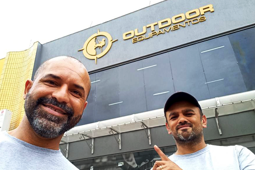

MOVIDOS PELO COMPROMISSO DE
CUIDAR DO SEU PATRIMÔNIO
Quem somos
Pro Alto é uma empresa direcionada em solucionar problemas em lugares de acesso difíceis, facilitando o alcance em determinadas áreas que uma pessoa não qualificada conseguirá realizar.
Dispensamos o uso de ferramentas de grande porte que podem causar danos e acidentes irrevercíveis a um colaborador.
Todos nossos colaboradores tem a qualificação necessária para poder realizar este tipo de serviço, sendo eles, supervisionados e acompanhados por um técnico de nível superior.
Nosso material passa por cuidados específicos, constantes prolongando assim sua vida útil.
Serviços que realizamos
Parceiros
